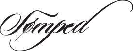
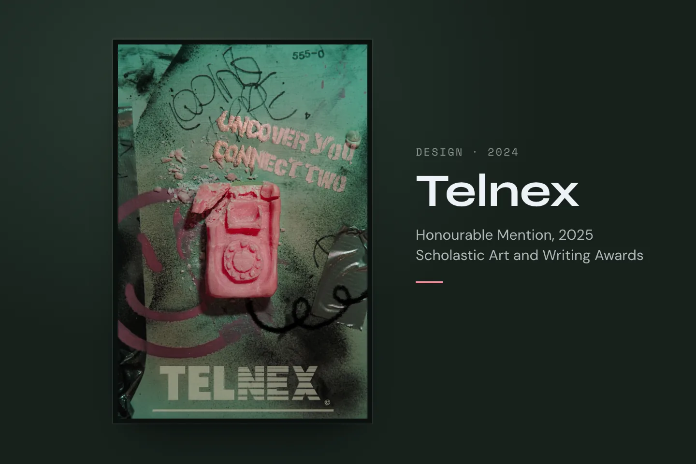
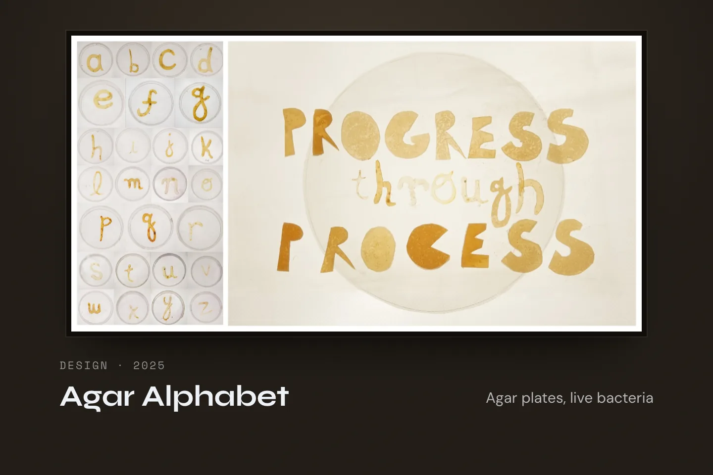
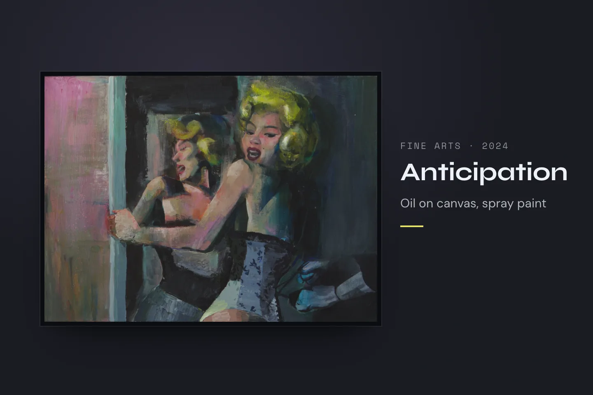
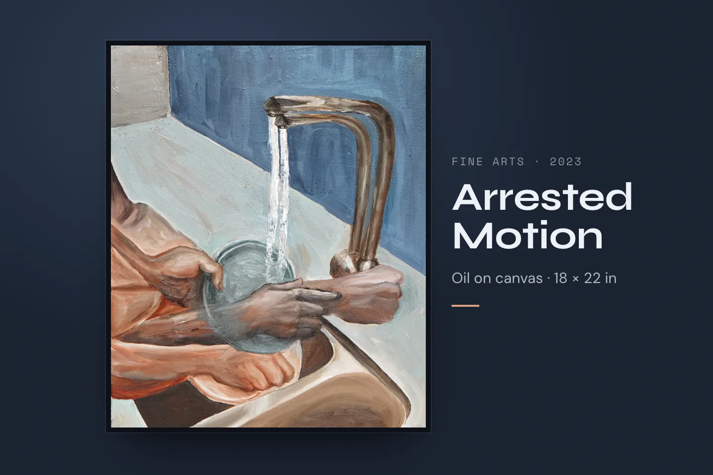

Work
Other work
01 · 5 projects
Design and code

Brand + websompednyc ↗Brand identity and booking site for my tooth-gem business.- UX + hardware · 2024H2Know →A plant-care prototype with an Arduino soil-moisture sensor and a companion app for checking plant health.
- Game concept · 2024Eternal Wreckening →A mobile horror-game concept where four survivors face one monster using motion controls and haptic feedback.
- CodeUnder the Weather →A p5.js app that reads New York weather data and responds with sarcastic comments instead of a forecast.
- Interface critique · 2023SoundCloud Critique →Proposed changes to SoundCloud’s logo, navigation controls and playlist covers.
02 · 2 projects
Live visuals
03 · 4 projects
Art

Sculpture + printTelnex →A soap bar carved into a rotary telephone, and a fictional advertisement built around it.
Bio-designAgar Alphabet →Bacterial letterforms grown on agar plates, recording how samples and growth conditions changed the alphabet.
PaintingAnticipation →Marilyn Monroe painted in a private moment of self-reflection.
PaintingArrested Motion →Hands washing dishes, in transparent layers and brush texture that study repeated movement.